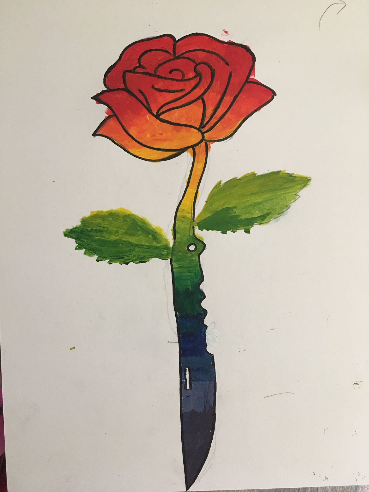

Problem:
Paint an image that slowly transforms from one object to another as it goes through the color spectrum.
Action:
I drew a rose that slowly morphs into a knife and goes from warm red colors to cold blue colors.
Results:
A gradual transformation in both object and color that represents a failed relationship that slowly transformed from something warm and loving to a cold blade that cuts and hurts.
Tools Used:
Acrylic Paint